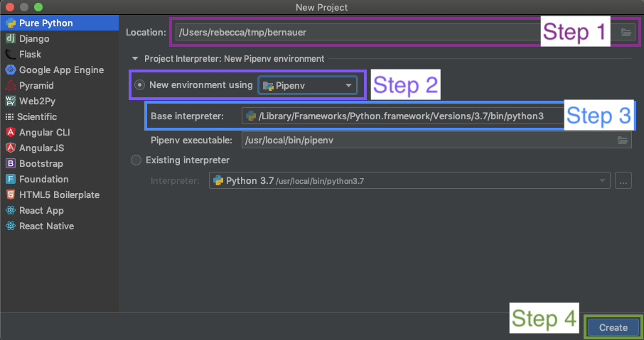

Getting Started with PyCharm¶
The Virtual Machine (VM) you have been provided with includes Python 3.7 pre-installed and pipenv and PyCharm Community Edition (https://www.jetbrains.com/pycharm/download/).
Note
My version of this project is called bernauer so anywhere you see this reference, you can replace it with the name of your project.
Before we start coding you will want to setup your Python project which can be done as follows:
Step One: Pick the Project Location
The default location is generally something like /Users/username/PyCharm however, I generally make two directories a /tmp one for projects that are in progress and a /sauce one for where all my completed projects, that I use regularly end up.
Step Two: Select the Environment Basis
In newer versions of PyCharm you are able to select weather your environment is created using virtualenv or pipenv for the basis of our walk-throughs we will be using pipenv so you become familiar with it. If you accidentally select virtualenv instead it’s no big deal and you can still use pipenv later.
Step Three: Select the Base Interpreter
The base interpreter represents the version of Python you will be using. If you’re unsure about the location of Python on Mac OS X or Linux you can generally use which to find the location:
% which python
/usr/bin/python
% which python3
/Library/Frameworks/Python.framework/Versions/3.7/bin/python3
A system independent solution for Python 2 is running:
% python -c "import sys; print sys.executable"
/usr/bin/python
For Python 3 you will need to use a slightly modified version:
% python -c "import sys; print(sys.executable)"
/usr/bin/python
For Windows with PowerShell experience you can run the following to find out where Python is installed:
> cd \
> ls *ython* -Recurse -Directory
Step Four: Create!
Once you have configured everything you can create your new project!